夢のある寝台列車は、日本唯一の存在 < サンライズ瀬戸・出雲 / 東京⇔香川 >
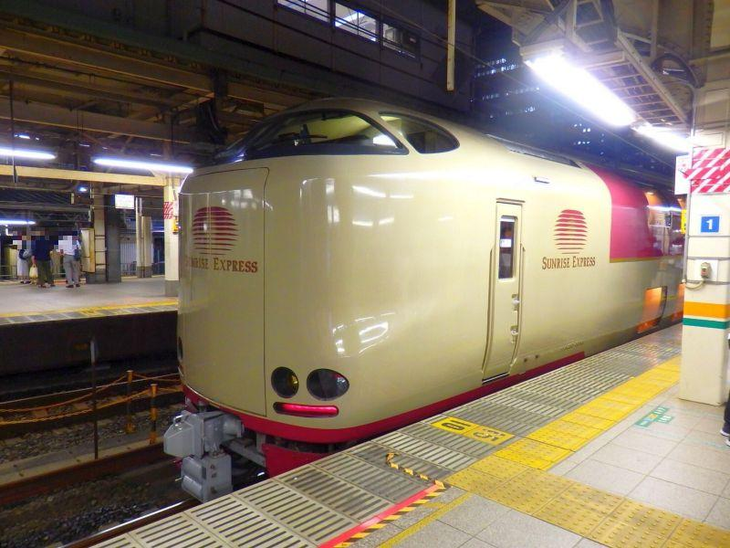
かつて、東京駅や上野駅・大阪駅等では、夜になると 大きな荷物を抱えた人たちがプラットホームに現れ、それぞれの行先へ向けた列車が出るのを 待つ姿が見られました。
その列車の名前は "ブルートレイン"
青い車体を備えた寝台列車を 国鉄(JR)では、愛称を込めてそう呼びました。
東京駅だったら まず最初に
西鹿児島行き(はやぶさ)が出て、
次は 宮崎(富士)、
熊本(みずほ)、
長崎(さくら)、
博多(あさかぜ)...
→→→平成9年(1997)頃まで
と、遠いところから順々に発車していく。
列車の名前や行先を見ているだけで旅情が掻き立てられ、ブルートレインは少年たちにとって 憧れの存在であり続けました。
しかしながら、今では日本全体を見渡しても定期(毎日)で運行されている寝台列車は、東京⇔高松・出雲市を結ぶ、サンライズ瀬戸・出雲 のみ。
個人的には、大人になったら乗るんだ！ と決めていた寝台列車の99%が廃止になりました...
そして今。
寝台列車の中で唯一生き残っているサンライズエクスプレスですが、これさえもはや いつ無くなるかわかりません。今すぐご乗車することをお勧めします。
夜の東京駅
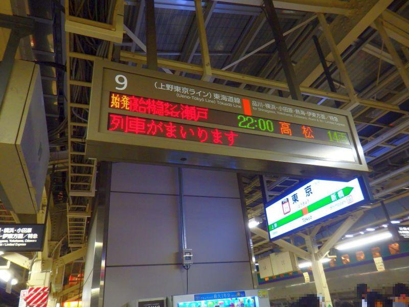
サンライズ瀬戸・出雲は、東京駅9番ホームから 22時ちょうどの発車。
ここの行先表示に "高松" と表示されることが、もはや奇跡として感じられます。
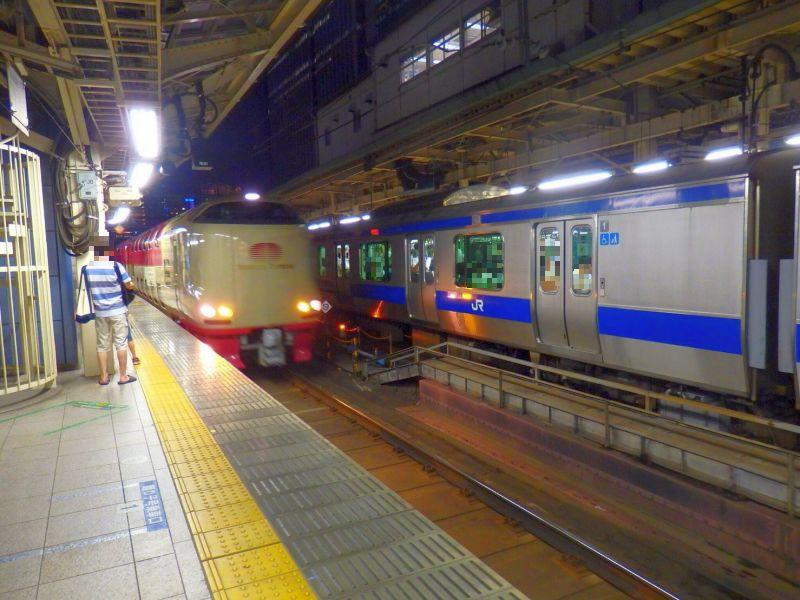
サンライズエクスプレス入線！
周囲を見渡してみると 駅に居るほぼみんなが会社帰り、少し疲れた様子。
けれど サンライズエクスプレスの到着・発車を待つ乗客は違います。ワクワク落ち着かない。今の時代、これほど乗ることが楽しみな列車はあるでしょうか。
夢を運ぶサンライズエクスプレス
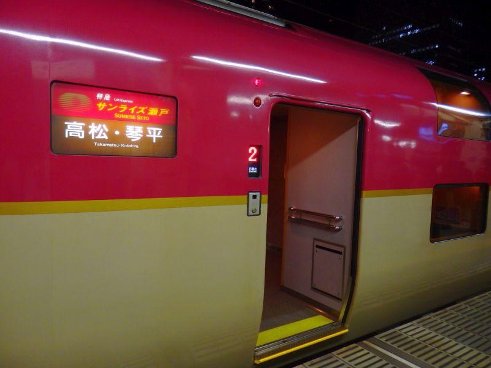
東京駅に入線して、乗車扉が開きました。夢のある鉄道旅の始まりです。
サンライズ瀬戸・出雲は、東京から岡山は両者を繋いだ併結運転を行い、岡山駅で瀬戸は瀬戸大橋を渡って高松へ。出雲は伯備線を北上して 米子・松江を経由して出雲市へ向かいます。
すなわち、仮に瀬戸の乗車券が取れなくても 出雲が取れたら、岡山駅まで来ることができます。諦めないで切符を探しましょう。
表示のように、サンライズ瀬戸は繁忙期は琴平駅まで延長運転が行われます。これは一度高松駅に到着してから 反対向きになり琴平駅へ向かいます。
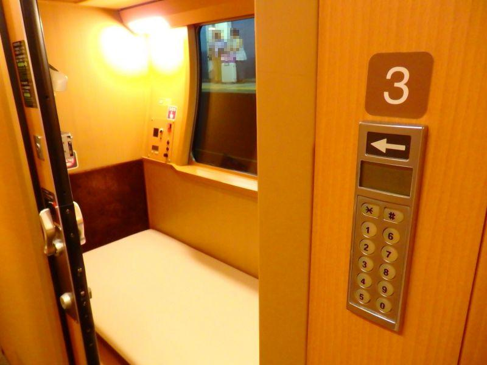
サンライズエクスプレスの大きな特徴は、個室メインであること。
ナンバーキーが設置されていて、内外カギをかけることができるので 眠りながらの移動も安心です。
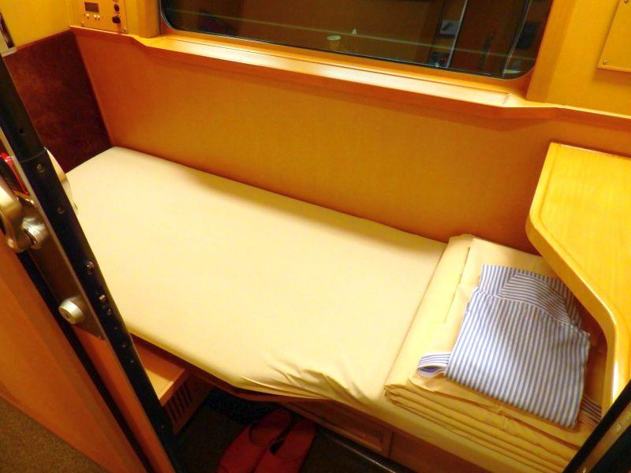
掛け布団(シーツ)は足元に。寝台列車の定番・JR浴衣を着ることができるのも、今やサンライズエクスプレスだけになりました。
内装には木がふんだんに使用されていますが、これは設計・施工に住宅メーカーである ミサワホームさんが務めたため、高品質の空間になっています。
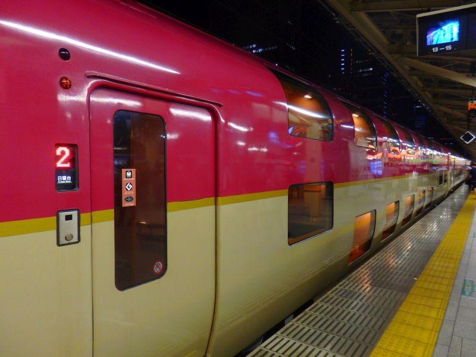
いくつかある客室の中で、
"シングル"
"ソロ"
が最も多く配室され、それぞれ上下二階建ての車両になっています。
シングルとソロの違いは ズバリ部屋の広さですが、1,080yenの差でその違いが大きいので、この両者で迷った場合は シングル を選ぶことをお勧めします。
また、一番安価な座席として "ノビノビ座席" があります。
カーペットの上に寝る、いわゆる フェリーの雑魚寝スタイルですが、座席扱いで寝台券が不要なので 料金が安い。シングルとの差額は7,000yen程度の開きがあります。
ただ、せっかくサンライズエクスプレスに乗車するのであれば 一番の売りである個室で、自分時間を過ごすのがお勧めです。
ここはやはり "シングル" が一番バランスが取れているように思います。
夜の誰もいないプラットホームを眺めながら...
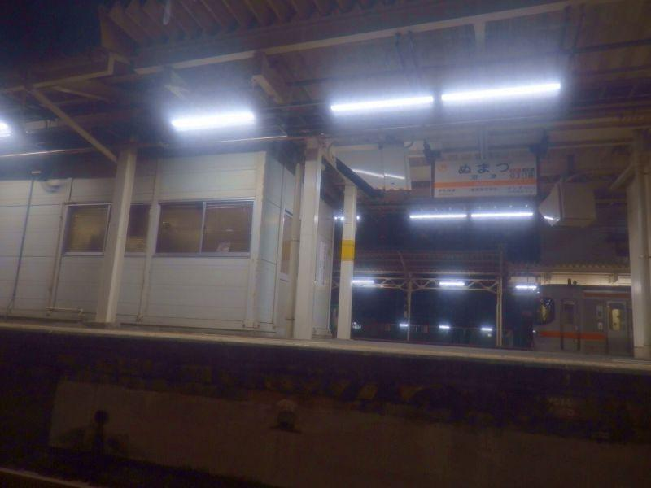
東京駅を出たサンライズエクスプレスは、
<22:00> 東京
↓
<22:23/22:24> 横浜
↓
<23:21/23:23> 熱海
↓
<23:39/23:40> 沼津
↓
<23:53/23:54> 富士
↓
<0:19/0:20> 静岡
↓
<1:11/1:12> 浜松
と 浜松まで進んだところで、乗車のための駅停車が終了します。
静岡県内の主要駅に順々停車しますが、これらの都市から高松・出雲市へ乗り換えなしで行くことができる乗り物は 他に無いので、実は隠れた有効交通機関だったりします。
熱海・静岡・浜松は新幹線の駅と同居 なので、もし東京駅出発時に乗り遅れても 新幹線に乗車すれば、すぐにサンライズエクスプレスを追い越すので、これらの駅で乗車が可能。ただ 新幹線はいつでも乗ることができるけれど、サンライズエクスプレスに乗車する機会は なかなか無いと思うので、乗り遅れないようにしましょう。
夜の誰もいない静まり返ったプラットホームを眺めながら、お弁当を食べて 缶ビールを飲みながら...
サンライズエクスプレスは 車内販売や食堂車等はなく、清涼飲料水の自販機のみ。予め 食べ物・飲み物を購入して乗車しましょう。
せっかくの寝台列車旅の機会ですから、駅弁やデパート弁当など 少し奮発してみるのも、ここでは旅の楽しみ方として 賢明であるように思います。
翌朝のサンライズ
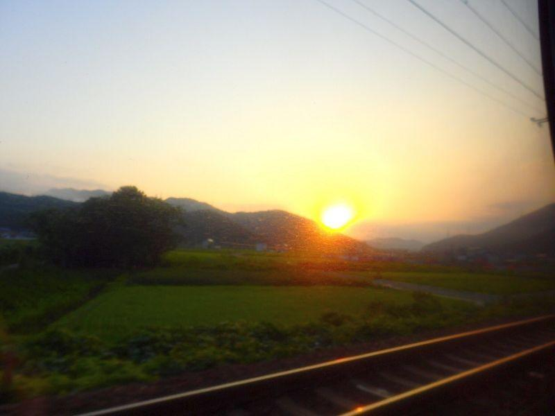
おはようございます。
素敵な朝日が見れました。列車名の通りです。
皆さんは寝台列車に乗った時は寝れますか？
自分は殆ど寝れません。終始興奮して眠たくならないんです。寝ていては勿体ないです。翌日が仕事の場合は向かないです...
夜が明ける場所は時期によって異なり、サンライズ瀬戸は冬だと岡山駅を出て 瀬戸大橋の上で日の出となります。
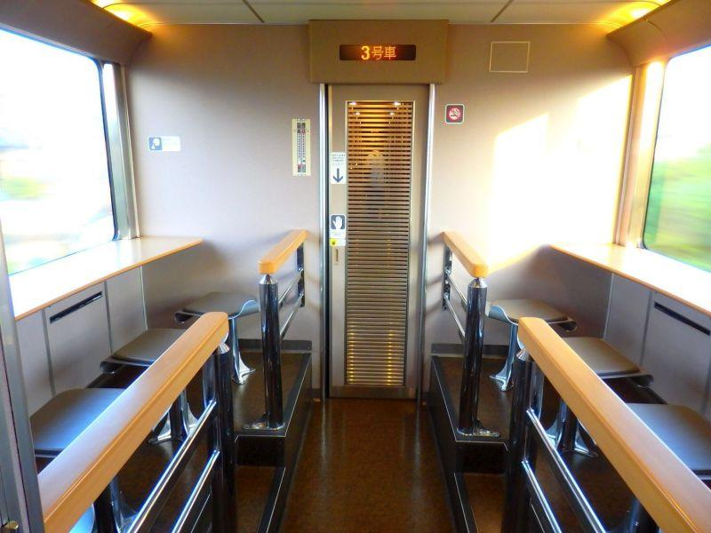
共有のラウンジへ。
個室メインのサンライズエクスプレスの中で 数少ない共有設備(他はWC、シャワーなど)。自販機もこの区画にあります。
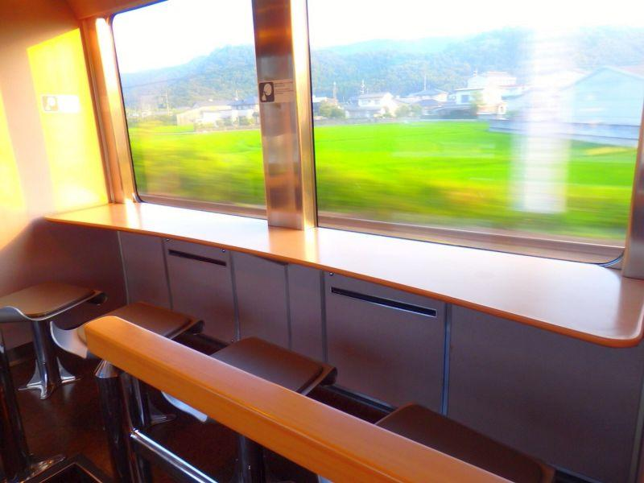
ラウンジで流れる景色を見ながら過ごす 早朝のひとときがお勧め。
そういう意味では、上り(東京方面)は朝起きたら大都会の景色なので、下り(高松・出雲市方面)列車の方が 朝起きたら田舎の風景が広がり、旅情をそそる場面が多いと言えます。
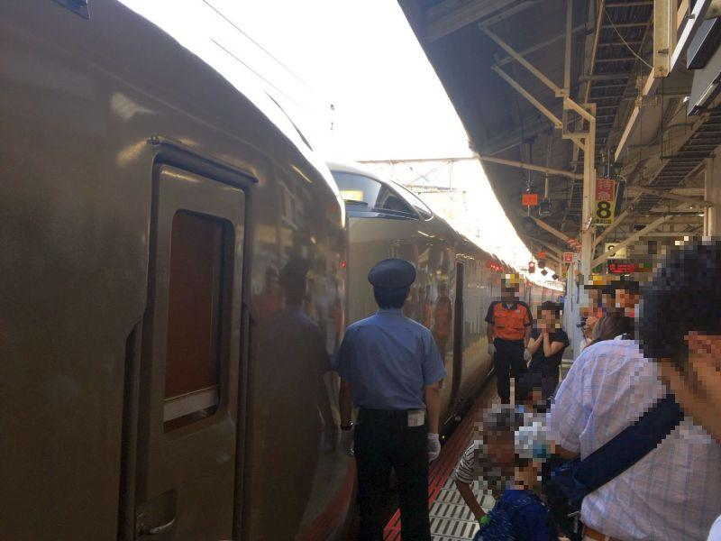
下り列車の一大イベント・サンライズ瀬戸/出雲 切り離し。岡山駅で行われます。
ここからサンライズ瀬戸は 瀬戸大橋を渡って高松へ。
サンライズ出雲は 倉敷から伯備線を北上して、米子・松江・出雲など 山陰各都市へ。
瀬戸は高松まで1時間足らずで着いてしまうのに対して、出雲で終点出雲市まで行くと まだ3時間くらいかかります。少しでも長く乗れるサンライズ出雲がうらやましい。
サンライズ瀬戸のハイライトシーン・朝の瀬戸大橋通過
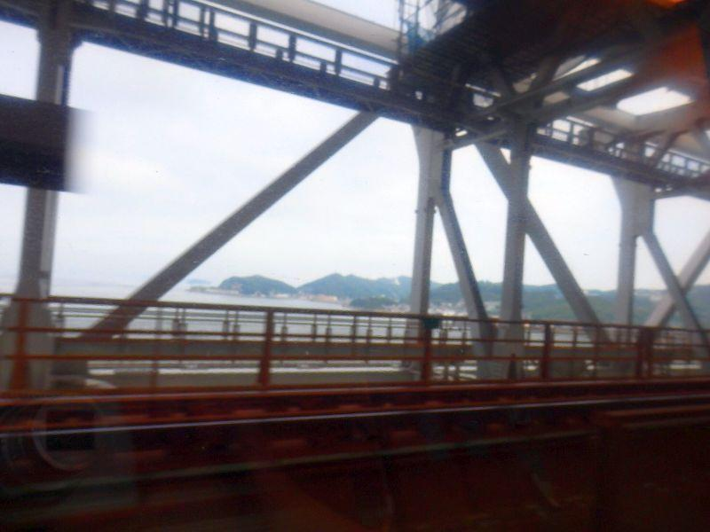
下り・サンライズ瀬戸のハイライトシーン・瀬戸大橋通過。
海の上を列車が走る...
改めて考えると すごいことです。
東京⇔香川県の移動手段は、新幹線やそれこそコトバスエクスプレスを始め より安価なLCCなど、予算に応じて選ぶことができますが、ここでは サンライズ瀬戸をお勧めします。
日本全国でここだけという希少さもさることながら、移動時間も旅として楽しむことができ 睡眠も計算できる、夢のようなツール。
サンライズエクスプレス、今のうちにご乗車ください。
◎ 足を伸ばして寝れるので、睡眠時間が計算できる
◎ 新幹線の終電より遅く発車して、始発より早く到着できる
◎ 個室メインで、セキュリティも安心
◎ 全国唯一の定期運行寝台列車
◎ 旅情満点
▲ よく遅延が発生する
▲ 他の交通機関に比べて 割高感
近いうちに無くなるかもしれない理由...
× 車齢が20年を経過している
× 四社間(四国・西日本・東海・東日本)の運行調整の難しさ
写真 : そらうみスタッフSS